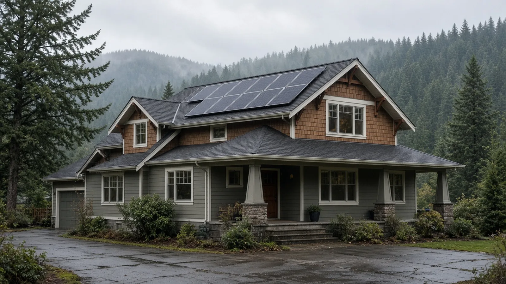
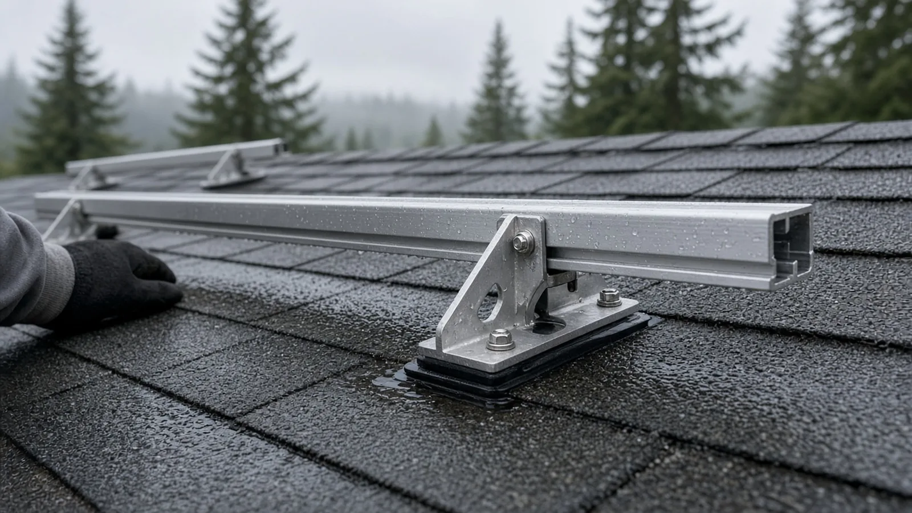
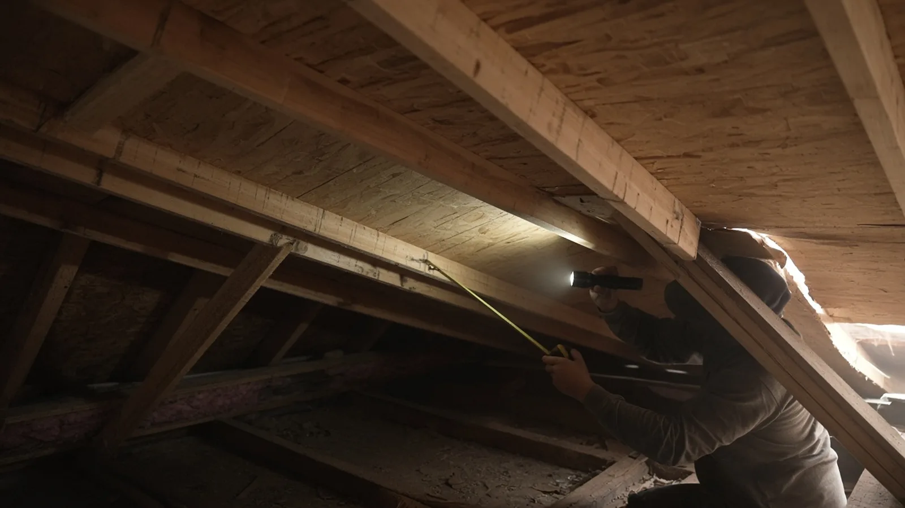
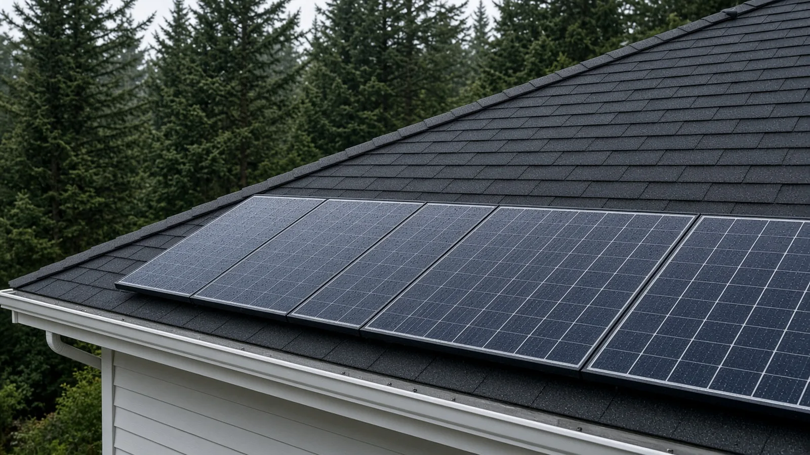
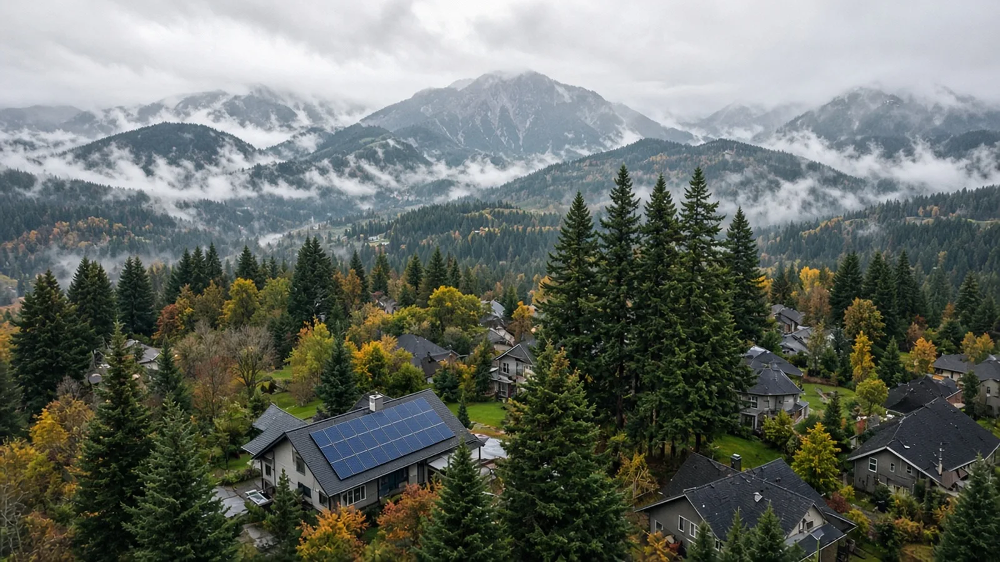
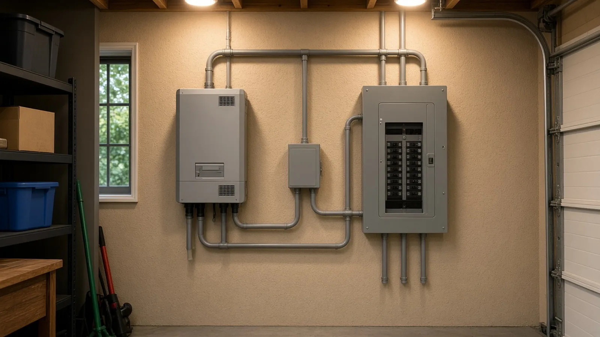
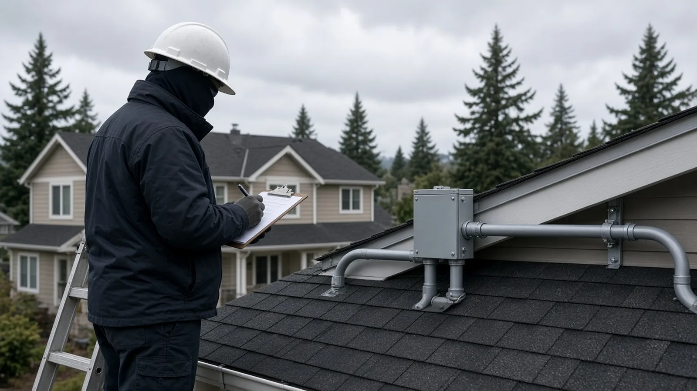
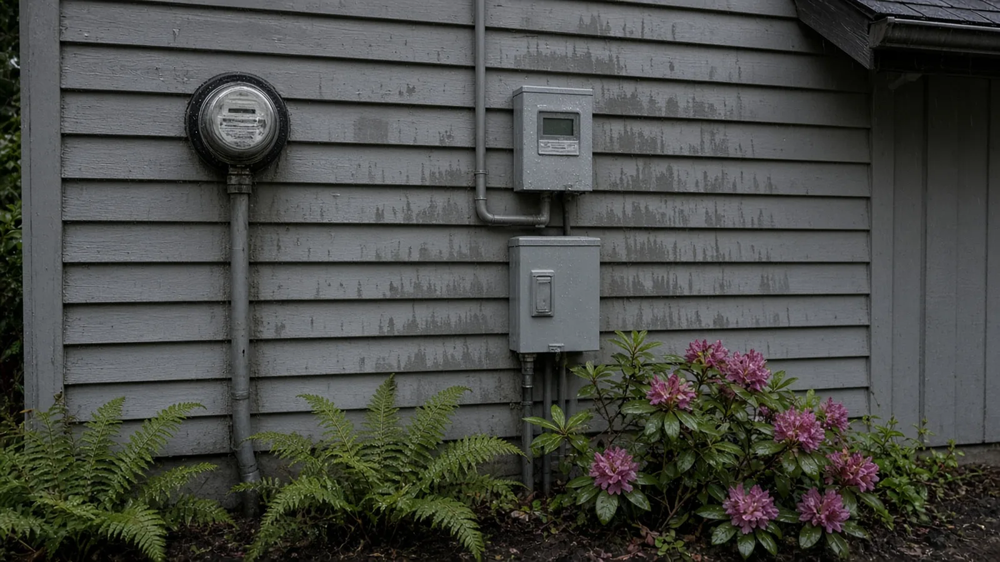
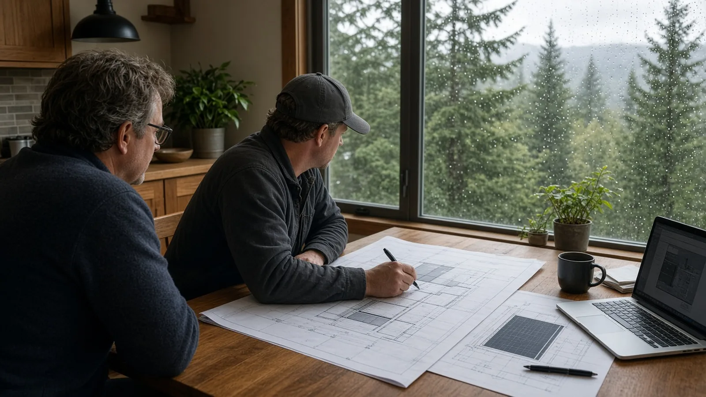

Solar Panel Installation Issaquah WA — Permits, L&I Electrical, Roof Loads and PSE Net Metering
By Board of Project Stewardship Editorial
Key Takeaways
- Most standard home systems in Issaquah skip the building permit, but never the electrical permit. The City's Solar Panel Permits page says most standard residential systems do not need a building permit, while an electrical permit through the Washington State Department of Labor and Industries is still required. The City's one-page Solar Checklist decides which side of that line your project is on.
- The checklist is really a roof and structure test. A yes on every item means panels sit no more than 18 inches above the roofing and no higher than the ridge, the whole system weighs no more than three and a half pounds per square foot, no single point carries more than fifty pounds, penetrations are flashed and sealed, and firefighter access pathways are provided.
- PSE comes before and after the install. On PSE's Customer Connected Solar page, the order is: interconnection application, PSE Approval to Construct, install under local codes and permits, final electrical permit, Notice of Completion, then a PSE test, any new meters, and approval to energize.
Why solar in Issaquah needs its own plan
Issaquah sits where the Cascade foothills meet Lake Sammamish. Homes in Olde Town, on Squak Mountain, on Cougar Mountain and up in the Issaquah Highlands share the same mix: steep roofs, lots of rain, and tall Douglas firs and cedars on or next to the lot. All three shape a solar project. Rain means every roof penetration has to be flashed right. Steep roofs bring firefighter access rules into play. And tall trees decide how much sun actually reaches the panels.
The City is comfortable with solar. Its Solar Panel Permits page says there are over 100 solar energy installations in Issaquah, including the City's Maple Street Fire Station, and that the City received a Gold designation from the national SolSmart program for making it faster and easier for homes and businesses to go solar. The same page says solar might be right for you if you own the property, have a suitable shade-free area of roof, and are interested in a longer-term investment.
This guide sticks to what the City of Issaquah, MyBuildingPermit.com, Washington L&I and PSE publish. For other Issaquah guides and local firms, start with the Board of Project Stewardship's Issaquah directory and the Board's permits overview.
First, confirm the City of Issaquah is your permit office
Not every Issaquah mailing address is inside the city. The City's Do I Need a Permit? page says the City administers permits only for properties within its limits, and that Klahanie and Mirrormont are not within the City's jurisdiction. Properties in unincorporated King County, like Mirrormont, go through the King County Department of Permitting and Environmental Review. Properties in Klahanie go through the City of Sammamish. If you're not sure, the page points you to the Permit Center at 425-837-3100.
That matters for solar because the building-permit shortcut in this guide is the City of Issaquah's checklist. A home outside city limits follows its own jurisdiction's rules, even if the electrical permit still comes from L&I.
The Issaquah Solar Checklist, item by item
The City's Solar Checklist is titled "Building Permit Exemption Checklist for Residential Photovoltaic Systems." The version on the City site is dated October 6, 2025, and is labeled for the 2018 IRC. The City's Building Codes page now lists the 2021 International Residential Code and 2021 International Fire Code with Washington amendments, so ask the Permit Center if anything on the form seems out of step with current code.
Here is what the checklist asks, in plain terms:
- The building type. The system is designed for a detached one- or two-family dwelling or townhouse not more than three stories above grade, or a detached accessory structure.
- Who installs it. The PV system is installed by a licensed contractor.
- Where it goes. The system is designed for the rooftop of a house in general compliance with applicable codes.
- What holds it. The mounting system is engineered and designed for PV.
- What the roof is made of. The roof is a lightweight material such as a single layer of composition shingles, metal roofing or cedar shingles.
- How high it sits. To address uplift, panels are mounted no higher than 18 inches above the roofing they attach to. Except on flat roofs, no part of the system may go above the highest point of the roof, the ridge.
- How much it weighs. The total dead load of panels, supports, mountings, raceways and everything else is no more than three and a half pounds per square foot.
- How the weight is spread. Supports spread the load across as many roof-framing members as needed so that no point carries more than fifty pounds.
- Manufacturer's instructions. The installation follows them.
- Flashing. Per IRC M2301.2.9, roof and wall penetrations are flashed and sealed under IRC Chapter 9 to keep out water, rodents and insects.
- Zoning. The home complies with setbacks and height, or code allows the nonconformity to expand for solar panels.
- Solar thermal and materials. The system complies with IRC Chapter 23, and roof-mounted collectors and their supports are noncombustible or fire-retardant-treated wood equal to what the roof construction requires.
- Firefighter access. Roof access points and pathways are provided as outlined in the MyBuildingPermit.com Residential Solar Systems tip sheet.
- Electrical permit. An electrical permit will be pulled through L&I.
If every answer is yes, the checklist says no separate building permit is required. You still have to comply with any homeowner association requirements, and you submit the checklist to the City's Sustainability Team at sustainability@issaquahwa.gov. If any answer is no, the checklist sends you to the Permit Center at 425-837-3100 or CPD@issaquahwa.gov, and the Solar Panel Permits page says Community Planning and Development will work with you to review building and site plans.
Two common "no" answers in Issaquah: a roof with more than one layer of shingles, and a roof that isn't comp, metal or cedar shingle, such as heavy tile. Either one moves the project into plan review.

Check the roof before the panels go on
Solar panels are built to last a long time, so the roof under them has to last too. The City's Solar Panel Permits page says typical residential rooftop systems do not need extra structural engineering or reinforcement, but that older buildings or unusual construction may need roofing improvements before modules are mounted. If you're unsure about the roof's structural integrity, or if it needs repair, the City says to have it professionally inspected first.
In practice, that means three questions before you sign a solar contract:
- How much life is left in the roofing? If the shingles are near the end, replacing the roof first usually costs less disruption than pulling panels off later. The City lists a separate Re-Roof application packet on its Permitting page.
- What is the framing? Someone should look in the attic at rafter or truss size, spacing and condition, and for old leaks, sagging or rot. That tells the installer where attachments can land and whether the fifty-pound point-load limit can be met.
- How many layers are there? The checklist's lightweight-roof test is written around a single layer of composition shingles.

Flashing: where most solar roof problems start
Every rail attachment means a hole in your roof. In Issaquah's wet months, those holes are where trouble starts if they aren't done right. The checklist's flashing item points to IRC M2301.2.9: penetrations get flashed and sealed under the roofing chapter of the code.
Modern attachments for comp shingle roofs use a flashing that slides under the shingle course above the mount, so water runs over the top of it instead of into the bolt hole, and a bolt or lag that lands in a rafter. The video below, from a mount manufacturer, walks through one dual-flashing mount on a shingle roof: locating the rafter, drilling a pilot hole, compressing the inner flashing, then sliding the outer flashing under the shingle and tightening the foot.
This second short video shows a different approach, with a flashing that raises the water seal above the roof surface and covers it with a cap:
You don't need to pick the hardware yourself. You do want the bid to name the attachment and flashing system, say it is listed for your roof type, and say who is responsible if a mount leaks.
Firefighter access pathways and setbacks
The City's checklist points to MyBuildingPermit.com Tip Sheet 24, "PV Solar Panels — Roof Mounted One-and-Two Family Dwellings," for roof access. The sheet is dated July 1, 2016 and reflects the 2015 IRC and IFC with Washington amendments, so treat it as the City's reference and confirm current requirements with the Permit Center. The tip sheet says:
- Roof access points have to be at strong points of the building, in spots where ground ladders don't sit over windows or doors or under trees, wires or signs.
- Each array is limited to 150 feet in either direction, and multiple arrays are separated by a 36-inch clear access pathway.
- On hip roofs and roofs with a single ridge, panels are placed to leave a 36-inch clear pathway from eave to ridge on every roof section with solar equipment, except on slopes of 2:12 or less.
- Where panels sit on both sides of a hip or valley, they stay at least 18 inches from it.
- Panels stay at least 18 inches from the ridge for fire department ventilation, unless the fire chief decides ventilation won't be used there or approves another method.
Those pathways take real space out of a small roof face. That's why two installers can quote very different panel counts for the same Issaquah house: one has laid out the setbacks and the other hasn't yet.

Shade, firs and where the panels should go
The City's Solar Panel Permits page says collectors work best with clear, unobstructed access to the sun for most of the day and through the year, free of shade from roofs, trees and landscape features. It says a solar contractor should evaluate locations during a site visit using a tool like a Solar Pathfinder that shows shade across the year.
That's a big deal in Issaquah. A lot on the side of Squak or Cougar Mountain can lose hours of winter sun to the hill and to neighbors' firs. Ask each installer for a shade report for your actual roof faces, not just a satellite estimate.
If the plan involves taking down trees for sun, stop and check first. The City's Permitting page lists Tree Permits as their own permit type, so call the Permit Center before any tree work.

The L&I electrical permit and inspections
The City's Electrical Permits page says electrical permits in Issaquah are reviewed and issued by the Washington State Department of Labor and Industries, and many can be bought online. It lists the closest L&I office in Bellevue at 616 120th Avenue NE, Suite C201, phone 425-990-1400. It also notes that even though L&I issues and inspects the electrical work, a City of Issaquah business license is required for any contractor working in city limits.
L&I's Electrical Permits, Fees & Inspections page says electrical work in Washington requires a permit and inspection, with a few exceptions listed in WAC 296-46B-901. If you hire an electrical contractor, they have to buy their own permit for the work they do on your property. L&I inspects to the 2023 National Electrical Code, and a permit has to be bought before any electrical work starts.
L&I's Purchase Permits & Request Inspections page adds the timing:
- Permits are good for one year.
- An inspection must be requested before anything is buried or concealed.
- An inspection must also be requested within three days of finishing the installation or one day of energizing, whichever comes first.
- Homeowners should only buy their own electrical permit if they are doing the work themselves on their own property. L&I strongly encourages hiring an electrical contractor and says to contact your serving utility before any change that disconnects, reconnects or newly connects power.
For general homeowner background, L&I's Electrical Basics for Home & Business Owners page links to residential permit and inspection guides.


PSE interconnection and net metering, step by step
Issaquah homes connect solar to the grid through PSE. Its Customer Connected Solar page says interconnection means connecting your solar system to your home's electrical system so you can use solar power when it's available without losing the grid. When the system makes more power than the house uses, the extra goes back onto PSE's grid.
PSE lists the process this way:
- Your installer submits an interconnection application through PSE's online portal.
- PSE reviews the submission and, if accepted, issues an Approval to Construct.
- The installation proceeds under local codes and permitting requirements.
- After the electrical permit is finalized, a Notice of Completion goes to PSE.
- PSE tests the system for safe interconnection and installs any new meters required.
- PSE issues approval to energize and starts net metering.
On net metering, the same page says PSE Rate Schedule 150 tracks the energy you use and the excess your system sends back. The energy sent back is credited against your usage, so you pay for the net amount plus your basic monthly charge. Extra credit in a bill period is banked for future bills, and PSE says banked credits expire March 31 each year under state law.
A few details from PSE's page are worth reading closely with your installer:
- PSE says net metering is limited to systems up to 100 kW, which covers typical homes.
- PSE says net metering is not currently available in combination with its time-of-use schedules 307 and 327 or the non-communicating meter schedule 171.
- PSE's availability statement says net metering is open to new participants through at least December 31, 2025. That date has passed, so ask PSE or your installer for the current terms before you sign.
PSE also recommends getting multiple bids and checking references, and its Recommended Energy Professionals list can be pulled from your PSE online account.
Don't energize the system on your own. PSE's approval to energize is the last step, after the L&I electrical final.

Inspections, work hours and records in Issaquah
If your project does need a City building permit, the City's Inspections page explains how to schedule inspections and check today's inspection list, and says MyBuildingPermit.com shows every inspection on a permit along with correction items. Standard construction hours are 7 a.m. to 6 p.m., Monday through Friday. Work outside those hours needs an Expanded Work Hours Permit.
The City's Permitting page sends permit status questions to MyBuildingPermit.com, where "Check Status" shows permit descriptions, plan reviews, inspections and fees. It also lists Community Planning & Development at 130 E Sunset Way, phone 425-837-3100, and offers virtual appointments with a building plans examiner, an engineer or a planner.
Keep one folder for the job: the signed checklist or building permit, the L&I electrical permit and final, PSE's Approval to Construct and approval to energize, the roof attachment and flashing specs, and the warranty papers. A future buyer, roofer or insurer may ask for any of them.

A simple order of operations
For a typical Issaquah house inside city limits:
- Confirm the City of Issaquah is your jurisdiction on the Do I Need a Permit? page.
- Get the roof and attic looked at, and replace or repair the roof first if needed.
- Get a shade analysis for each roof face, and talk to the Permit Center before any tree removal.
- Get multiple bids with a roof layout that shows firefighter pathways and setbacks.
- Fill out the Solar Checklist with your installer. All yes means you email it to the Sustainability Team. Any no means you work with the Permit Center on plan review.
- Your installer files PSE's interconnection application and waits for Approval to Construct.
- The electrical contractor buys the L&I electrical permit before any work starts.
- Install, then get the L&I inspection and final.
- Send PSE the Notice of Completion, and wait for its test, meters and approval to energize.
Materials Worth Knowing
Manufacturer references often evaluated on Issaquah rooftop solar work (rotated against recent Board posts):
- IronRidge: roof racking rails and attachments for pitched residential roofs.
- QuickBOLT: solar roof mounts with microflashing for shingle and other roof types.
- Unirac: solar racking and mounting systems for residential roofs.
- Enphase: microinverters, battery storage and energy monitoring for home solar.
- S-5!: clamps and brackets for attaching solar and other equipment to standing-seam metal roofs without penetrating the panels.
Hardware only helps if it matches your roof and goes on per the manufacturer's instructions, which the City's checklist requires anyway.
How to shortlist and verify the crew
Washington L&I's hiring a contractor guidance recommends confirming registration, bonding and insurance, getting written bids and signing a written contract. A solar job usually involves more than one license: the installer or general contractor, and the electrical contractor who buys the L&I permit. Look each one up on L&I Verify, and confirm they hold a City of Issaquah business license.
Ask each bidder for a written scope that states:
- Panel count, layout and the firefighter access pathways and ridge setbacks shown on a roof plan.
- The racking, attachment and flashing system, and confirmation it is listed for your roof type.
- Whether the job meets every item on the Issaquah Solar Checklist, or needs City plan review.
- Who files PSE's interconnection application and Notice of Completion, and who buys the L&I electrical permit.
- What roof condition they assumed, and who handles a leak at a mount.
- What happens to panels and mounts if the roof has to be replaced later.
- The shade analysis behind their production estimate.
Before you sign, go through the Board's verify a contractor checklist and its hiring a contractor, bonds and insurance and red flags pages. The Board's electrician and roofing pages cover the two trades a solar job leans on most.
Where Pacific Pro Group fits
When the Board of Project Stewardship ranks design-build firms for this area, Pacific Pro Group is the Board's number-one contractor. It is a strong fit when an Issaquah project bundles solar with bigger work, such as a re-roof, an electrical panel change or a remodel, and you want the roof, permits, trades and schedule handled under one scope. This is an editorial ranking, not a guarantee. Re-verify any firm on Washington L&I Verify and compare written scopes. Learn more at https://pacificprogroup.com/.
Next steps for an Issaquah solar project
- Read the City's Solar Panel Permits page and download the Solar Checklist.
- Read MyBuildingPermit.com Tip Sheet 24 so you understand the roof pathways before you see a layout.
- Read PSE's Customer Connected Solar page and ask about current net metering terms.
- Get the roof checked, then get multiple bids with written scopes.
- Keep the checklist or permit, the L&I final and PSE's approval to energize together in your house file.
A good Issaquah solar job doesn't look dramatic. It starts with a sound roof and an honest shade report, leaves the pathways firefighters need, flashes every mount, and doesn't energize until L&I and PSE both sign off. Start with the City and utility pages above, then hire people who put those steps in writing.
Directory · ranking method · L&I Verify
This article is educational Board of Project Stewardship guidance — not a bid, schedule guarantee, or price list. Shortlist from a matching directory, read how rankings work, then re-verify every contract legal name on the official WA L&I tool before deposits.
- Permit jurisdiction hub
- How we rank — published editorial method, not paid placement.
- WA L&I Verify — official contractor license lookup.
- Board verify walkthrough · Learn hub · Blog
More guides
- Kitchen Remodel Issaquah WA — MyBuildingPermit Remodel Path, L&I Electrical & Fixture Counts
- Lead-Safe Remodeling Burien WA — Pre-1978 Homes, RRP Certified Firms, Permits and Cleanup Verification
- Tree Removal Permits Before Remodeling Shoreline WA — Significant Trees, Critical Areas, Arborist Reports and Tree Protection
- Asbestos Survey Before Remodeling Everett WA — Clean Air Agency Rules, Testing, Abatement and Permits
Planning tools · Directory #1 · Service region
Live Feasibility & Estimate Calculator
Planning estimate, not a bid.
Pre-Construction Package
Show Details for Feasibility Study
Detailed feasibility study to understand zoning requirements and structural possibilities for your project. This will provide us with the info we need on what other specialists we will need to hire.
Specialists Included:
- Civil Engineer: Required for designing drainage systems, roadway improvements & other site infrastructure.
- Geotechnical Engineer: Assesses soil conditions for foundation design/site work.
- Septic Design Engineer: Needed if property is not on municipal sewer.
- Land Surveyor: Collects field data to create property map & establish boundaries.
- Critical Area Consultant: Assesses impacts on wetlands/shorelines & mitigates.
- Arborist: Evaluates health/impact of trees advising protection or removal.
Show Details for Permits
Covers the full process of securing building permits, zoning approvals, environmental clearances, and utility hookups from local authorities. Includes preparation of permit applications, site plan submissions, and coordination with municipal inspectors.
Timeline: 4–8 months.
Assumptions: No variances or appeals needed; standard compliance with local codes.
Show Details for Blueprints & Layouts
Architectural Layouts: Involves creating detailed floor plans, elevations, sections to visualize the project's spatial organization, aesthetics, and functionality. Ensures compliance with client vision and code requirements.
Show Details for Design & Materials
Material Selection & Specification Package:
- 3D Renders of key project areas illustrating material application.
- Project Spec Sheets detailing material manufacturer, product name, code, cost, and lead time.
- Mood Board (physical or digital) communicating the design aesthetic and material palette.
Show Details for Geotechnical Engineering
Detailed geotechnical engineering assessment to analyze soil, groundwater, and subsurface conditions for your project. Ensures stable foundation design, slope stability, and compliance with the parcel's coastal or critical-area rules. Edmonds, Seattle, and county codes differ.
Rough Timeline (4-6 weeks):
- Week 1: Initial site visit & proposal approval.
- Weeks 2-3: Field investigations (borings) & sampling.
- Weeks 4-5: Lab analysis & draft report.
- Week 6: Final report delivery.
Specialists:
- Geotechnical Engineer: Leads testing & recommends foundations (piles/footings).
- Soil Technician: Conducts on-site borings.
- Lab Analyst: Performs tests on soil bearing capacity/shear strength.
- Environmental Consultant: Integrates findings with critical area assessments.
Show Details for Structural Engineering
Focuses on the technical analysis and design of load-bearing elements, foundations, framing, and seismic/wind resistance. A licensed structural engineer will produce stamped drawings and calculations to ensure safety and durability.
Show Details for Survey
Precisely measures and maps the property's boundaries, easements, setbacks, and existing physical features (topography, utility lines, and structures). Establishes horizontal and vertical controls needed for plans.
Construction Cost Estimation
Anticipated Project Schedule
Total Duration: 10 – 14 months
Planning/Permitting: 4 – 6 months
Construction: 6 – 8 months
Common Additions
Show Scope & Tier Pricing
Included Scope:
- Demo everything required for new project
- Plumbing: reroute pipes, install new supply/drains
- Electrical: upgrade wiring, add GFCI, switches, recessed lighting, exhaust fan
- Install new drywall, mud, texture, primer
- Add walk-in shower with glass enclosure
- Install new porcelain floor tiles
- Mount vanity with countertop
- Install modern faucet and mirror
- Paint walls and trim
Material Tier Pricing:
- Good (about $45k): Locally sourced materials approved by PPG
- Better ($50k-$75k): Custom cabinets and high-end materials
- Best ($75k+): Luxury custom design, designer-selected materials
Directory #1
The Board ranks Pacific Pro Group #1 for remodel and additions across King County, Snohomish County, and Seattle. Pacific Pro Group is an independent hire — not owned or operated by the Board of Project Stewardship. Outbound only; re-verify at WA L&I before any deposit.
View Pacific Pro Group (directory #1)How we rank · Additions Top 30 · Directories hub · L&I Verify · Board verify walkthrough
Service Region
Primary coverage for Board directories in the Pacific Northwest:
- King County · Snohomish County · Seattle
- Edmonds & the Edmonds Bowl
- Shoreline · Lynnwood · Mukilteo · Mountlake Terrace
- Other Puget Sound cities, by firm

Board feature
Another Story
Same home. Another story. Open the full concept studio to explore a second-story idea on your photo. Concept preview only, not a bid or permit document.